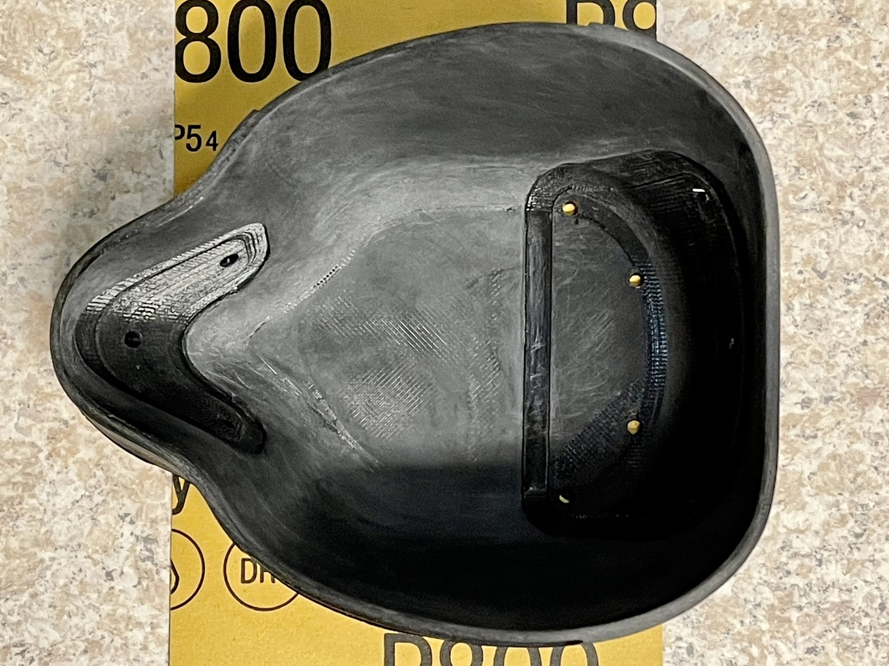
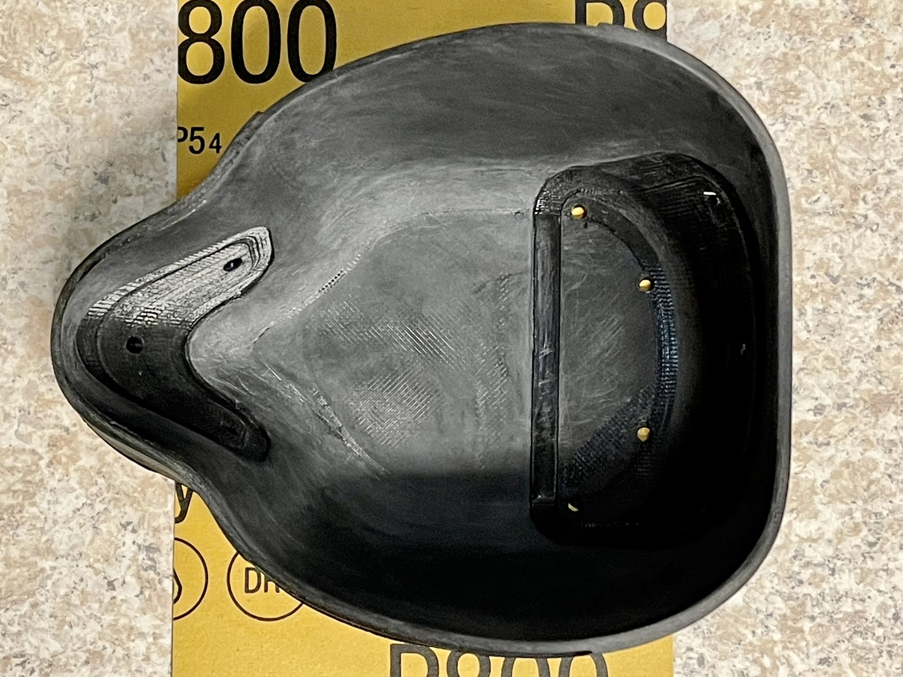

Transparent Reusable Face Mask
Build Instructions
Introduction
During the 2020 COVID-19 pandemic, I (Geert Bevin) have made and donated over 1000 opaque 3D printed masks that have been fit-tested and and particle tested with great results. Using the same basic shape and fundamental design, I spent 4 months designing a transparent mask that fits better, has more airflow and better filtration.
NO GUARANTEES: This mask is not approved as N95 replacement and is not guaranteed to help against COVID-19 or any other disease.
These instructions will step you through how to make these transparent masks using the tools and equipment that are at my disposal. I've provided the design files and STL exports for you to be able to adapt these instructions to your own environment.
The latest version of these files is freely available under the CC BY-SA 4.0 License from here:
https://github.com/gbevin/transparent-face-mask
Create the Mask Mold
The shell of the mask is designed to be transparent, light, flexible and shock resistant. The most viable small production technology to achieve this, turned out to be vacuum forming. This heats a sheet of clear PETG plastic and pulls it over a mold by creating a vacuum. Here, this mold is 3D printed and polished in order to achieve the highest possible clarity.
The heat of vacuum forming requires molds to be heat resistant, which needs to be taken into account when selecting the 3D printing technology and material used. Having FDM and MSLA printers available, FDM with polycarbonate filament was the best choice at my disposal. For these molds, I'm using a Raise3D E2 printer and Polymaker PolyMax PC filament.
The print settings are:
- Nozzle: 0.4mm
- Layer: 0.1mm
- Walls: 3
- Infill: 30% Gyroid
- Extruder temperature: 270°C
- Bed temperature: 100°C


Once the mold is finished printing, it's important to sand and polish it to the finest smoothness possible because vacuum forming will transfer even the smallest imperfection to the plastic that's pulled over the mold.
Finishing the mold is a very labor intensive process as you manually go through a series of sand paper grits, I'm using the following in order: 80, 150, 220, 320, 400, 800, 1000, and 3000. Don't press too hard because there is a risk of separating filament layers and creating unintended holes as they come loose during sanding. You can achieve a very smooth finish by using Brasso for the last step with a microfiber cloth.


 



3D Print the Mask Inserts


Vacuum Form and Trim the Mask Shell


Glue the Seal to the Mask Shell